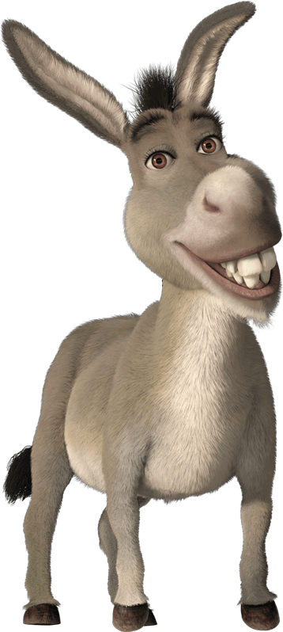

SHREK
Shrek is a gigantic, green-skinned, physically intimidating ogre with a
Scottish accent. In Shrek Forever After, it is revealed that he is much smaller than the average
ogre. Even though much of his past is unknown, according to Shrek the Musical, it is revealed
that Shrek was sent away by his parents on his seventh birthday, because it was a tradition
among all ogres. (The original book also has his parents evicting from their swamp.) He is seen
traveling alone, being either screamed at or teased by passers-by. The only time he receives a
pleasant greeting is a wave from a young Fiona, who is promptly led away by her parents. In the
book, his parents threw him away from the dark hole where he had hatched

Donkey

Puss In Boots